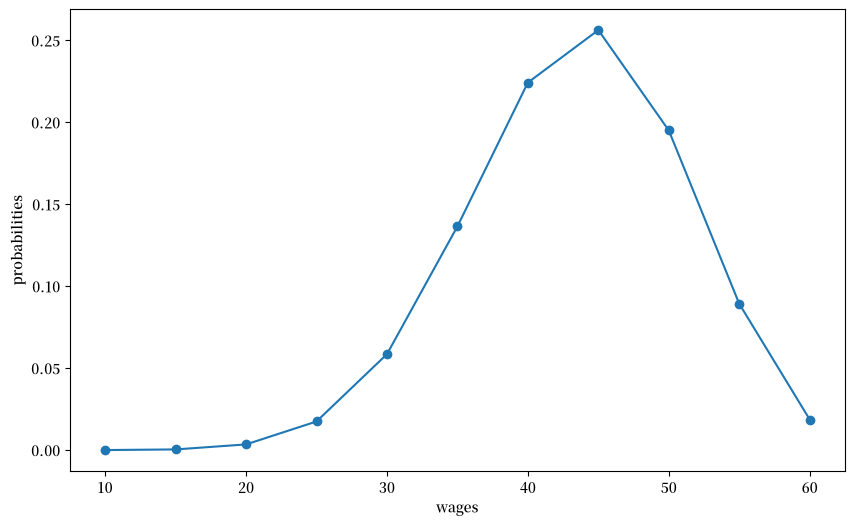
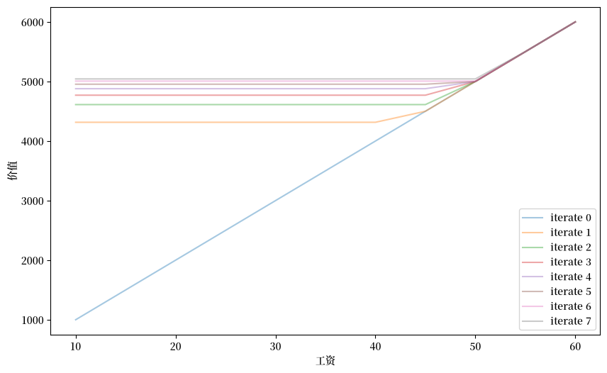
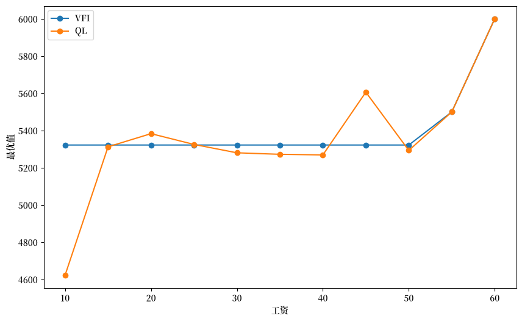
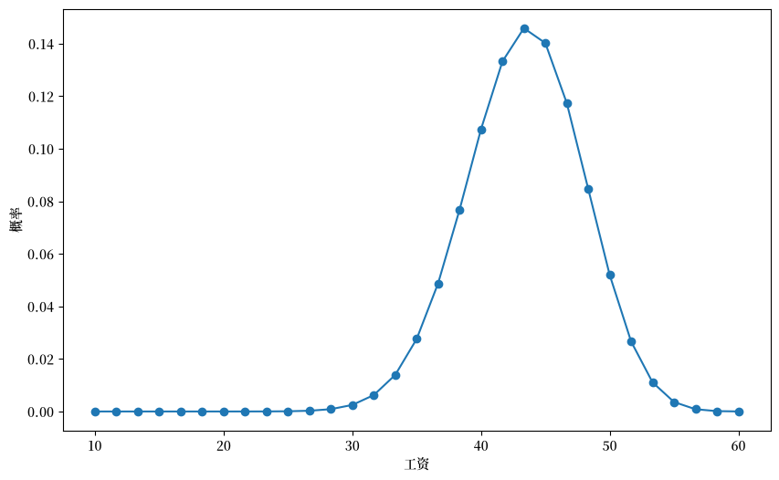
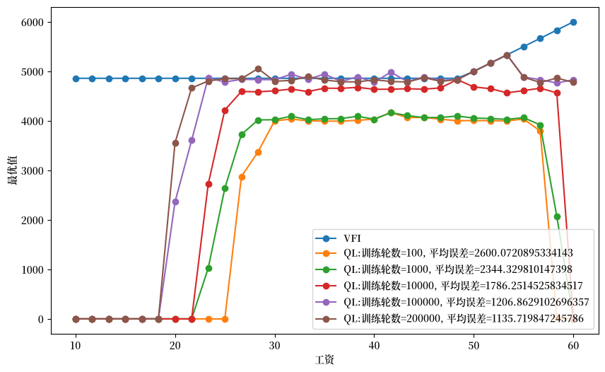
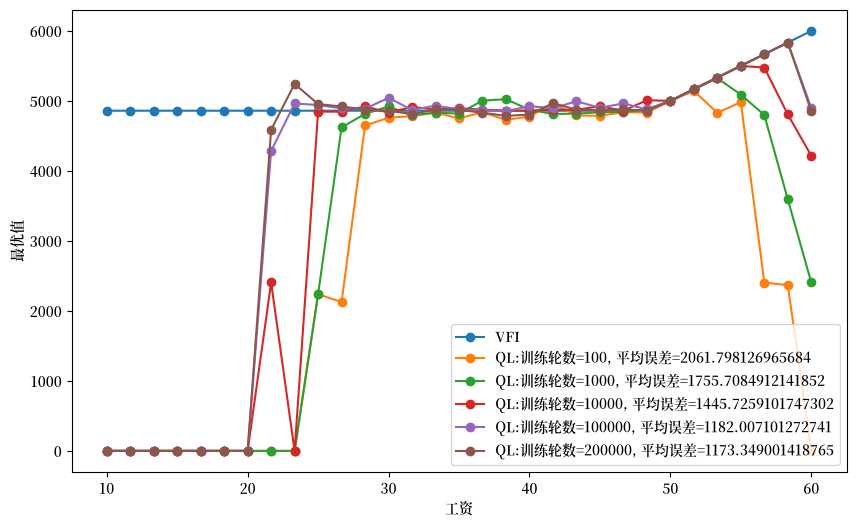

60. 工作搜寻 IX：McCall劳动者的Q学习#
60.1. 概述#
本讲介绍一种强大的机器学习方法——Q学习。
[Sutton and Barto, 2018]对Q学习和其他各种统计学习方法进行了详细介绍。
Q学习算法融合了两个关键思想：
动态规划的原理
最小二乘法的递归形式，也称为时序差分学习 (Temporal Difference Learning or TD Learning)
在本讲中，我们将Q学习算法应用到McCall求职模型中，探讨劳动者如何通过这种方法做出最优决策。
我们还将扩展模型，考虑劳动者被赋予选择辞去当前工作的情况。
与我们在 quantecon 讲座 中学习的 McCall 劳动者模型的动态规划方法相比，Q-学习算法的一个显著特点是： 劳动者不需要完全了解
生成一系列工资的随机过程
说明接受或拒绝工作机会所带来后果的奖励函数
Q-学习算法通过统计学习方法来获取这些信息。
统计学习通常可以简化为某种形式的最小二乘法，这里也不例外。
每当我们提到统计学习，我们就必须说明学习的对象是什么。
对于Q-学习来说，学习的对象不是动态规划中所关注的价值函数。
但它是与价值函数密切相关的一个对象。
在本讲研究的有限动作、有限状态环境中，需要通过统计学习获得的对象是一个称为Q-表 (Q-table) 的结构，它是有限集合上Q-函数 (Q-function) 的具体表现形式。
Q-函数（或Q-表）有时也被称为质量函数或质量表。
Q-表的行和列分别对应智能体可能遇到的状态，以及在每个状态下可以采取的行动。
算法中起重要作用的是一个类似于贝尔曼方程的方程。
它与我们在这个quantecon讲座中看到的McCall模型的贝尔曼方程有所不同。
在本讲座中，我们将学习一些关于：
与马尔可夫决策问题相关的Q-函数或质量函数，其最优值函数满足贝尔曼方程
时序差分学习，Q-学习算法的一个关键组成部分
像往常一样，让我们先导入一些 Python 模块。
!pip install quantecon
import numpy as np
from numba import jit, float64, int64
from numba.experimental import jitclass
from quantecon.distributions import BetaBinomial
import matplotlib.pyplot as plt
import matplotlib as mpl
FONTPATH = "fonts/SourceHanSerifSC-SemiBold.otf"
mpl.font_manager.fontManager.addfont(FONTPATH)
plt.rcParams['font.family'] = ['Source Han Serif SC']
np.random.seed(123)
60.2. McCall 模型回顾#
我们首先回顾在这个 quantecon 讲座中描述的 McCall 模型。
我们将计算一个最优值函数和实现该值的策略。
我们最终会将这个最优策略与 Q-learning McCall 劳动者所学到的进行比较。
McCall 模型的特征由参数 \(\beta,c\) 和已知的工资分布 \(F\) 来描述。
McCall 劳动者想要最大化预期的终身收入折现总和
劳动者的收入 \(y_t\) 在就业时等于他的工资 \(w\)，在失业时等于失业补助 \(c\)。
对于刚收到工资offer \(w\) 并正在决定是接受还是拒绝的 McCall 劳动者来说，最优值 \(V\left(w\right)\) 满足贝尔曼方程
为了与Q-学习的结果进行比较基准，我们首先近似最优值函数。
在有限离散状态空间中，可能的状态由\(\{1,2,...,n\}\)索引，我们对价值函数\(v\in\mathbb{R}^{n}\)做一个初始猜测，然后对贝尔曼方程进行迭代：
让我们使用这个quantecon讲座中的Python代码。
我们使用一个名为VFI的Python方法，通过价值函数迭代来计算最优值函数。
我们构造一个假设的工资分布，并用以下Python代码绘制：
n, a, b = 10, 200, 100 # default parameters
q_default = BetaBinomial(n, a, b).pdf() # default choice of q
w_min, w_max = 10, 60
w_default = np.linspace(w_min, w_max, n+1)
# plot distribution of wage offer
fig, ax = plt.subplots(figsize=(10,6))
ax.plot(w_default, q_default, '-o', label='$q(w(i))$')
ax.set_xlabel('wages')
ax.set_ylabel('probabilities')
plt.show()
findfont: Failed to find font weight normal, now using 600.

接下来我们将通过对贝尔曼方程进行迭代收敛来计算劳动者的最优价值函数。
然后我们将绘制贝尔曼算子的各种迭代结果。
mccall_data = [
('c', float64), # 失业补偿
('β', float64), # 贴现因子
('w', float64[::1]), # array of wage values, w[i] = wage at state i
('q', float64[::1]) # array of probabilities
]
@jitclass(mccall_data)
class McCallModel:
def __init__(self, c=25, β=0.99, w=w_default, q=q_default):
self.c, self.β = c, β
self.w, self.q = w, q
def state_action_values(self, i, v):
"""
The values of state-action pairs.
"""
# Simplify names
c, β, w, q = self.c, self.β, self.w, self.q
# Evaluate value for each state-action pair
# Consider action = accept or reject the current offer
accept = w[i] / (1 - β)
reject = c + β * (v @ q)
return np.array([accept, reject])
def VFI(self, eps=1e-5, max_iter=500):
"""
Find the optimal value function.
"""
n = len(self.w)
v = self.w / (1 - self.β)
v_next = np.empty_like(v)
flag=0
for i in range(max_iter):
for j in range(n):
v_next[j] = np.max(self.state_action_values(j, v))
if np.max(np.abs(v_next - v))<=eps:
flag=1
break
v[:] = v_next # 将内容复制到v中
return v, flag
def plot_value_function_seq(mcm, ax, num_plots=8):
"""
Plot a sequence of value functions.
* mcm is an instance of McCallModel
* ax is an axes object that implements a plot method.
"""
n = len(mcm.w)
v = mcm.w / (1 - mcm.β)
v_next = np.empty_like(v)
for i in range(num_plots):
ax.plot(mcm.w, v, '-', alpha=0.4, label=f"iterate {i}")
# Update guess
for i in range(n):
v_next[i] = np.max(mcm.state_action_values(i, v))
v[:] = v_next # copy contents into v
ax.legend(loc='lower right')
mcm = McCallModel()
valfunc_VFI, flag = mcm.VFI()
fig, ax = plt.subplots(figsize=(10,6))
ax.set_xlabel('工资')
ax.set_ylabel('价值')
plot_value_function_seq(mcm, ax)
plt.show()

接下来我们将打印出迭代序列的极限值。
这是通过价值函数迭代得到的McCall劳动者价值函数的近似值。
在我们完成Q学习之后，我们将使用这个值函数作为基准。
print(valfunc_VFI)
[5322.27935875 5322.27935875 5322.27935875 5322.27935875 5322.27935875
5322.27935875 5322.27935875 5322.27935875 5322.27935875 5500.
6000. ]
60.3. 隐含质量函数 \(Q\)#
质量函数 \(Q\) 将状态-动作对映射为最优值。
它们与最优值函数紧密相连。
但价值函数仅是状态的函数，而不包含动作。
对于每个给定状态，质量函数给出从该状态开始可以达到的最优值列表，列表的每个组成部分表示可以采取的一种可能动作。
对于我们的McCall劳动者模型，假设有有限的可能工资集合：
状态空间 \(\mathcal{W}=\{w_1,w_2,...,w_n\}\) 由整数 \(1,2,...,n\) 索引
动作空间为 \(\mathcal{A}=\{\text{accept}, \text{reject}\}\)
令 \(a \in \mathcal{A}\) 为两个可能动作之一，即接受或拒绝。
对于我们的McCall劳动者，最优Q函数 \(Q(w,a)\) 等于一个此前失业的劳动者在手头有offer \(w\) 时，如果他采取动作 \(a\) 所能获得的最大价值。
\(Q(w,a)\) 的这个定义假设劳动者在随后的时期会采取最优行动。
我们的 McCall 劳动者的最优 Q-函数满足
注意，系统(60.2)的第一个方程假设在个体接受了一个报价后，他将来不会拒绝同样的报价。
这些方程与我们在这个 quantecon 讲座中研究的劳动者最优值函数的贝尔曼方程是一致的。
显然，在那个讲座中描述的最优值函数 \(V(w)\) 与我们的 Q-函数有如下关系：
如果我们观察系统(60.2)中的第二个方程，我们注意到由于工资过程在时间上是独立同分布的，\(Q\left(w,\text{reject}\right)\)，方程右侧与当前状态\(w\)无关。
因此我们可以将其表示为一个标量
这一事实为我们提供了一种替代方案，而且事实证明，在这种情况下，这是一种更快的方法来计算McCall劳动者模型的最优值函数和相关的最优策略。
与我们上面使用的价值函数迭代不同，我们可以对系统(60.2)中第二个方程的一个版本进行迭代直至收敛，该方程将\(Q_r\)的估计值映射为改进的估计值\(Q_r'\)：
在\(Q_r\)序列收敛后，我们可以从以下公式复原McCall劳动者模型的最优值函数\(V(w)\)：
60.4. 从概率到样本#
我们之前提到，McCall劳动者模型的最优Q函数满足以下贝尔曼方程：
注意第二行中对\(F(w')\)的积分。
为了开始思考Q-learning，我们可以尝试一个不严谨但有启发性的方法：移除积分符号。
这样，我们可以构建一个差分方程系统，保留(60.3)的第一个方程，但将第二个方程中去除对\(F(w')\)的积分：
第二个方程不可能对我们状态空间的笛卡尔积中的所有\(w, w'\)对都成立。
但是，也许我们可以借助大数定律，希望它能对一个长时间序列中抽取的\(w_t, w_{t+1}\)对平均成立，这里我们把\(w_t\)看作\(w\)，把\(w_{t+1}\)看作\(w'\)。
Q-learning的基本思想是从\(F\)中抽取一个长样本序列（虽然我们知道\(F\)，但我们假设劳动者不知道）并对递归式进行迭代，
将日期 \(t\) 时的 Q 函数估计值 \(\hat Q_t\) 映射到日期 \(t+1\) 时的改进估计值 \(\hat Q_{t+1}\)。
为了建立这样一个算法，我们首先定义一些误差或”差异”
我们的自适应学习方案可以表示为
其中 \(\alpha \in (0,1)\) 是一个小的学习率参数，控制每次更新的步长大小，而 \(\hat Q_t\) 和 \(\textrm{diff}_t\) 分别是 \(2 \times 1\) 向量，
它们对应于方程组 (60.5) 中的相应元素。
这种非正式的推导为我们打开了通往 Q-学习的大门。
60.5. Q-学习#
让我们首先精确描述一个 Q-学习算法。
然后我们将实现它。
该算法通过使用蒙特卡洛方法来更新 Q-函数的估计值。
我们从 Q-函数的初始猜测开始。
在本讲中研究的例子里，我们有一个有限的动作空间和有限的状态空间。
这意味着我们可以将 Q-函数表示为矩阵或 Q-表，\(\widetilde{Q}(w,a)\)。
Q-学习通过更新 Q-函数来进行，决策者在模拟生成的工资序列路径上获得经验。
在学习过程中，我们的 McCall 劳动者会采取各种行动，并从这些行动中获得相应的奖励。
他同时了解环境（在此情形下即工资分布）以及奖励函数——在此情形下即失业补偿 \(c\) 与工资的现值。
这一更新算法基于对以下递归式的一个小修改（稍后会加以说明）：
其中
对于 \(a \in \{\textrm{accept}, \textrm{reject}\}\)，\(\widetilde{TD}(w,a)\) 表示时序差分误差 （TD error），这是驱动更新的关键因素。
这个更新机制实际上就是我们在方程 (60.6) 中简要描述的自适应学习系统的具体实现。
方程组 (60.8) 尚未体现出的算法的一个特征是随机实验，我们通过偶尔随机地将
替换为
并且偶尔将
替换为
来添加这一特征。
在以下McCall劳动者Q-学习的伪代码的第3步中，我们以概率\(\epsilon\)激活这种实验：
设置一个任意的初始Q表。
从\(F\)中抽取初始工资报价\(w\)。
从Q表的相应行中，使用以下\(\epsilon\)-贪婪算法选择行动：
以概率\(1-\epsilon\)选择使价值最大化的行动，并且
以概率 \(\epsilon\) 选择另一个行动。
更新与所选行动相关的状态，并根据(60.8)计算 \(\widetilde{TD}\)，然后根据(60.7)更新 \(\widetilde{Q}\)。
如果需要则抽取新的状态 \(w'\)，否则采用现有工资，并再次根据(60.7)更新Q表。
当新旧Q表足够接近时停止，即对于给定的 \(\delta\)，满足 \(\lVert\tilde{Q}^{new}-\tilde{Q}^{old}\rVert_{\infty}\leq\delta\)，或者当劳动者连续接受达到规定的 \(T\) 期时停止。
带着更新后的Q表返回步骤2。
重复此程序 \(N\) 次回合或直到更新的Q表收敛。
我们将步骤2到7的一次完整过程称为时序差分学习的一个”回合”或”轮次”（episode或epoch）。
在我们的情境中，每个回合都始于个体抽取一个初始工资报价，即一个新状态。
个体根据当前的Q表选择行动，获得奖励，然后转移到由本期行动决定的新状态。
Q表通过时序差分学习不断更新。
我们重复这个过程直到Q表收敛或达到预设的最大回合数。
多个回合使个体能够从头开始，并访问那些从上一回合的终止状态出发不太可能访问到的状态。
例如，如果个体根据其Q表接受了某个工资报价，他就不太可能再从工资分布的其他部分抽取新的报价。
通过使用\(\epsilon\)-贪婪策略并增加回合数，Q学习算法在探索新可能性和利用已知信息之间取得平衡。
注意： 在(60.7)中自动定义的最优Q表所对应的\(\widetilde{TD}\)，对所有状态-动作对都满足\(\widetilde{TD}=0\)。我们的Q-learning算法能否收敛到最优Q表，取决于算法是否足够频繁地访问所有状态-动作组合。
下面我们将这个算法实现为Python类。
为了简化，我们用s表示介于\(0\)和\(n=50\)之间的状态索引，其中\(w_s=w[s]\)表示对应的工资值。
Q表的第一列表示拒绝工资所对应的价值，第二列表示接受工资所对应的价值。
我们使用numba编译来提高计算效率。
params=[
('c', float64), # 失业补偿
('β', float64), # 折现因子
('w', float64[:]), # 工资值数组，w[i] = 状态i下的工资
('q', float64[:]), # 概率数组
('eps', float64), # epsilon贪婪算法参数
('δ', float64), # Q表阈值
('lr', float64), # 学习率α
('T', int64), # 接受的最大期数
('quit_allowed', int64) # 接受工资后是否允许辞职
]
@jitclass(params)
class Qlearning_McCall:
def __init__(self, c=25, β=0.99, w=w_default, q=q_default, eps=0.1,
δ=1e-5, lr=0.5, T=10000, quit_allowed=0):
self.c, self.β = c, β
self.w, self.q = w, q
self.eps, self.δ, self.lr, self.T = eps, δ, lr, T
self.quit_allowed = quit_allowed
def draw_offer_index(self):
"""
从工资分布中抽取状态索引。
"""
q = self.q
return np.searchsorted(np.cumsum(q), np.random.random(), side="right")
def temp_diff(self, qtable, state, accept):
"""
计算与状态和动作相关的TD。
"""
c, β, w = self.c, self.β, self.w
if accept==0:
state_next = self.draw_offer_index()
TD = c + β*np.max(qtable[state_next, :]) - qtable[state, accept]
else:
state_next = state
if self.quit_allowed == 0:
TD = w[state_next] + β*np.max(qtable[state_next, :]) - qtable[state, accept]
else:
TD = w[state_next] + β*qtable[state_next, 1] - qtable[state, accept]
return TD, state_next
def run_one_epoch(self, qtable, max_times=20000):
"""
运行一个"轮次"。
"""
c, β, w = self.c, self.β, self.w
eps, δ, lr, T = self.eps, self.δ, self.lr, self.T
s0 = self.draw_offer_index()
s = s0
accept_count = 0
for t in range(max_times):
# 选择动作
accept = np.argmax(qtable[s, :])
if np.random.random()<=eps:
accept = 1 - accept
if accept == 1:
accept_count += 1
else:
accept_count = 0
TD, s_next = self.temp_diff(qtable, s, accept)
# 更新qtable
qtable_new = qtable.copy()
qtable_new[s, accept] = qtable[s, accept] + lr*TD
if np.max(np.abs(qtable_new-qtable))<=δ:
break
if accept_count == T:
break
s, qtable = s_next, qtable_new
return qtable_new
@jit
def run_epochs(N, qlmc, qtable):
"""
运行N次轮次，每次使用上一次迭代的qtable。
"""
for n in range(N):
if n%(N/10)==0:
print(f"进度：轮次 = {n}")
new_qtable = qlmc.run_one_epoch(qtable)
qtable = new_qtable
return qtable
def valfunc_from_qtable(qtable):
return np.max(qtable, axis=1)
def compute_error(valfunc, valfunc_VFI):
return np.mean(np.abs(valfunc-valfunc_VFI))
# 创建一个 Qlearning_McCall 实例
qlmc = Qlearning_McCall()
# 运行
qtable0 = np.zeros((len(w_default), 2))
qtable = run_epochs(20000, qlmc, qtable0)
进度：轮次 = 0
进度：轮次 = 2000
进度：轮次 = 4000
进度：轮次 = 6000
进度：轮次 = 8000
进度：轮次 = 10000
进度：轮次 = 12000
进度：轮次 = 14000
进度：轮次 = 16000
进度：轮次 = 18000
print(qtable)
[[4623.27213117 0. ]
[5312.66334307 5240.16951633]
[5383.35205175 5237.79482793]
[5325.48601716 5268.21922146]
[5280.52506399 5217.70726 ]
[5254.01665227 5272.37177627]
[5269.16195947 5246.66677361]
[5606.21569576 5245.29226548]
[5252.13367043 5293.36147867]
[5258.16033563 5500.00110486]
[5270.40587227 6000. ]]
# 检查价值函数
valfunc_qlr = valfunc_from_qtable(qtable)
print(valfunc_qlr)
[4623.27213117 5312.66334307 5383.35205175 5325.48601716 5280.52506399
5272.37177627 5269.16195947 5606.21569576 5293.36147867 5500.00110486
6000. ]
# 绘图
fig, ax = plt.subplots(figsize=(10,6))
ax.plot(w_default, valfunc_VFI, '-o', label='VFI')
ax.plot(w_default, valfunc_qlr, '-o', label='QL')
ax.set_xlabel('工资')
ax.set_ylabel('最优值')
ax.legend()
plt.show()

现在，让我们计算一个更大状态空间的情况：\(n=30\)（而不是\(n=10\)）。
n, a, b = 30, 200, 100 # 默认参数
q_new = BetaBinomial(n, a, b).pdf() # 默认的q选择
w_min, w_max = 10, 60
w_new = np.linspace(w_min, w_max, n+1)
# plot distribution of wage offer
fig, ax = plt.subplots(figsize=(10,6))
ax.plot(w_new, q_new, '-o', label='$q(w(i))$')
ax.set_xlabel('工资')
ax.set_ylabel('概率')
plt.show()
# VFI
mcm = McCallModel(w=w_new, q=q_new)
valfunc_VFI, flag = mcm.VFI()

mcm = McCallModel(w=w_new, q=q_new)
valfunc_VFI, flag = mcm.VFI()
valfunc_VFI
array([4859.77015703, 4859.77015703, 4859.77015703, 4859.77015703,
4859.77015703, 4859.77015703, 4859.77015703, 4859.77015703,
4859.77015703, 4859.77015703, 4859.77015703, 4859.77015703,
4859.77015703, 4859.77015703, 4859.77015703, 4859.77015703,
4859.77015703, 4859.77015703, 4859.77015703, 4859.77015703,
4859.77015703, 4859.77015703, 4859.77015703, 4859.77015703,
5000. , 5166.66666667, 5333.33333333, 5500. ,
5666.66666667, 5833.33333333, 6000. ])
def plot_epochs(epochs_to_plot, quit_allowed=1):
"绘制由不断增加的训练轮数所得到的值函数。"
qlmc_new = Qlearning_McCall(w=w_new, q=q_new, quit_allowed=quit_allowed)
qtable = np.zeros((len(w_new),2))
epochs_to_plot = np.asarray(epochs_to_plot)
# 绘图
fig, ax = plt.subplots(figsize=(10,6))
ax.plot(w_new, valfunc_VFI, '-o', label='VFI')
max_epochs = np.max(epochs_to_plot)
# 迭代训练轮数
for n in range(max_epochs + 1):
if n%(max_epochs/10)==0:
print(f"进度: 训练轮数 = {n}")
if n in epochs_to_plot:
valfunc_qlr = valfunc_from_qtable(qtable)
error = compute_error(valfunc_qlr, valfunc_VFI)
ax.plot(w_new, valfunc_qlr, '-o', label=f'QL:训练轮数={n}, 平均误差={error}')
new_qtable = qlmc_new.run_one_epoch(qtable)
qtable = new_qtable
ax.set_xlabel('工资')
ax.set_ylabel('最优值')
ax.legend(loc='lower right')
plt.show()
plot_epochs(epochs_to_plot=[100, 1000, 10000, 100000, 200000])
进度: 训练轮数 = 0
进度: 训练轮数 = 20000
进度: 训练轮数 = 40000
进度: 训练轮数 = 60000
进度: 训练轮数 = 80000
进度: 训练轮数 = 100000
进度: 训练轮数 = 120000
进度: 训练轮数 = 140000
进度: 训练轮数 = 160000
进度: 训练轮数 = 180000
进度: 训练轮数 = 200000

上述图表表明
Q-learning算法在学习那些很少被抽到的工资的Q表时存在困难
通过价值函数迭代计算出的”真实”价值函数，其近似质量会随着训练轮数增加而提升
60.6. 禁止在职劳动者辞职的情况#
前面在方程组 (60.8) 中描述的时序差分Q学习版本允许已就业的劳动者辞职，即作为在职者拒绝其工资，从而在本期获得失业补助，并在下一期抽取一个新的工作机会。
这是这个quantecon讲座中描述的McCall劳动者不会采用的一个选项。
有关证明，请参见[Ljungqvist and Sargent, 2018]第6章关于工作搜寻的内容。
但在Q-learning的背景下，赋予劳动者在失业时选择辞职并领取失业补助的选项，结果证明能够加速学习过程，因为这促进了实验探索，而不是仅仅过早地利用已有信息。
为了说明这一点，我们将修改时序差分的公式，以禁止已就业的劳动者辞去她之前已经接受的工作。
在这种可选行动的理解下，我们得到以下时序差分值：
事实证明，公式(60.9)与我们的Q学习递归(60.7)相结合，也能使我们的智能体最终学习到最优价值函数，效果与可以行使重新抽取选项的情形一样好。
但学习速度会更慢，因为一个过早接受工资报价的智能体，会在同一回合中失去探索新状态并调整该状态所关联价值的机会。
当训练轮数/回合数较少时，这可能导致较差的结果。
但如果我们增加训练轮数/回合数，就可以观察到误差减小，结果也随之改善。
我们用以下代码和图表来说明这些情形。
plot_epochs(epochs_to_plot=[100, 1000, 10000, 100000, 200000], quit_allowed=0)
进度: 训练轮数 = 0
进度: 训练轮数 = 20000
进度: 训练轮数 = 40000
进度: 训练轮数 = 60000
进度: 训练轮数 = 80000
进度: 训练轮数 = 100000
进度: 训练轮数 = 120000
进度: 训练轮数 = 140000
进度: 训练轮数 = 160000
进度: 训练轮数 = 180000
进度: 训练轮数 = 200000

60.7. 可能的扩展方向#
要将该算法扩展到处理连续状态空间的问题，一种典型方法是将Q函数和策略函数限制为特定的函数形式。
这就是深度Q学习（deep Q-learning）所采用的方法，其思路是使用多层神经网络作为良好的函数逼近器。
我们将在后续的quantecon讲座中讨论这一主题。